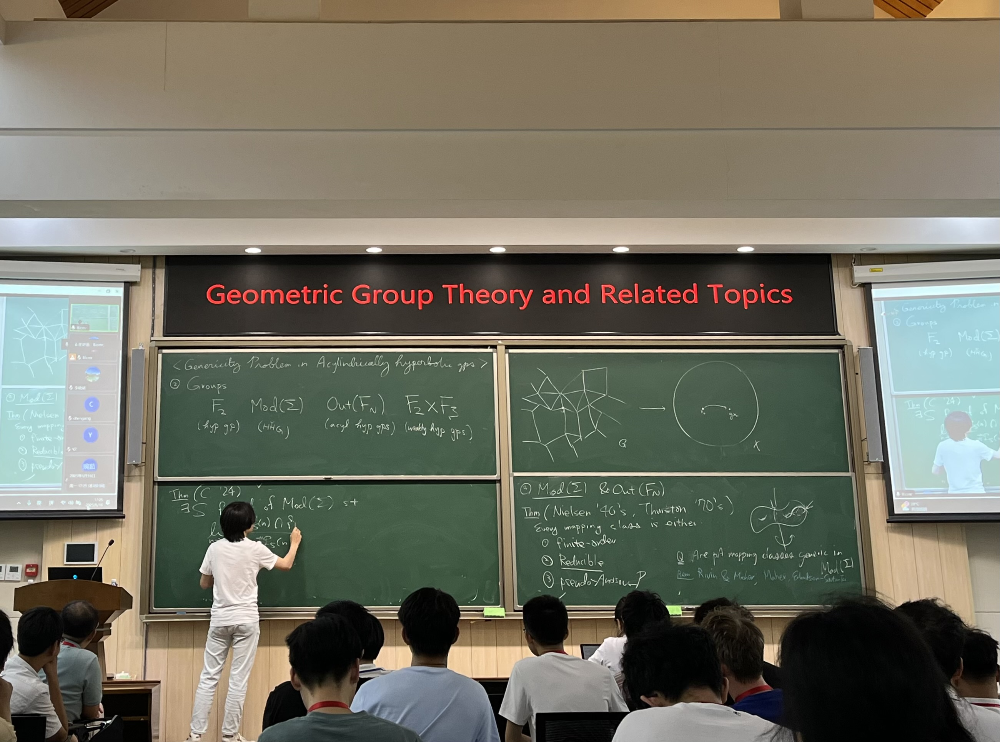

Inhyeok Choi / 최인혁
(He/Him)
Email address: inhyeokchoi48 AT gmail.com, inhyeokchoi AT kias.re.kr

Beijing, China. Courtesy of
Ryokichi Tanaka.
Another shot.
I am a mathematician at
KIAS
(Korea Institute for Advanced Study). For Jan–May 2025, I'm on leave from KIAS and am at
SLMath.
I received my PhD from
KAIST
under the supervision of
Harry Hyungryul Baik.
I am interested in various phenomena on groups with non-positive curvature.
What does it mean?
I think about some problems in group theory, low-dimensional topology,
dynamics, and probability theory. Examples include:
- interesting subgroups of some class of groups;
- statistics in hyperbolic surfaces, graphs, trees and CAT(0) cube complexes;
- random walks, escape rate and asymptotic entropy;
- percolation on Cayley graphs;
- limit sets and orbit distribution of Kleinian groups;
- Benjamini–Schramm convergence;
- bounded cohomology of hyperbolic and non-hyperbolic groups;
- interesting examples of groups.
There is a single keyword encompassing all of these: groups.
Hence I am deeply interested in groups.
Put more simply, I'm interested in objects and phenomena that exhibit rich symmetry.
SLMath program: Topological and Geometric Structures in Low Dimensions
. A recent talk regarding some of my papers.
YGGT XIV.
VISGAT (research seminar).
I support the
statement of inclusiveness
.
"L'essentiel est invisible pour les yeux, on ne voit bien qu'avec le coeur."
dans Le Petit Prince d'Antoine de Saint-Exupéry.
Last update: 2026.02.22.